Faites une première compilation et lancement de la solution ChatOnline.sln dans Visual Studio, ensuite fermez Visual Studio.
Ouvrez le fichier C:\Projects\ChatOnline\.vs\ChatOnline\config\applicationhost.config avec votre éditeur de texte préféré
Changez la ligne <binding protocol="http" bindingInformation="*:44363:localhost" />
À la ligne <binding protocol="http" bindingInformation="*:44363:" />
C'est-à-dire, supprimez simplement le texte localhost comme indiqué dans l'image ci-dessous
Plus d'informations à https://stackoverflow.com/questions/18454751/unable-to-launch-the-iis-express-web-server-error/18456361#18456361
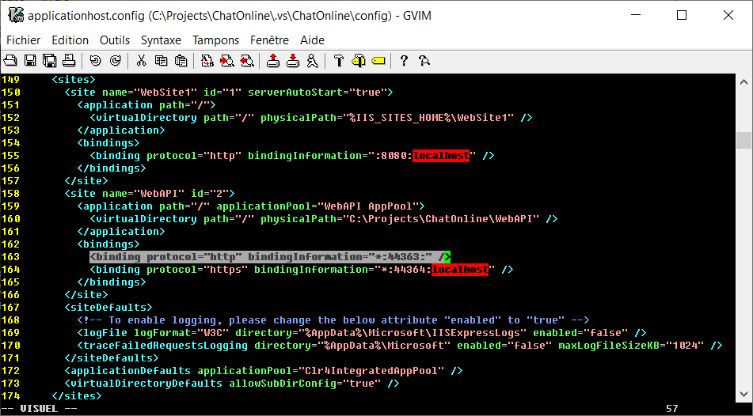
Ouvrez l'invite de commandes en tant qu'administrateur, comme indiqué dans l'image ci-dessous. Répondez Oui lorsqu'il vous est demandé d'autoriser le privilège administratif.
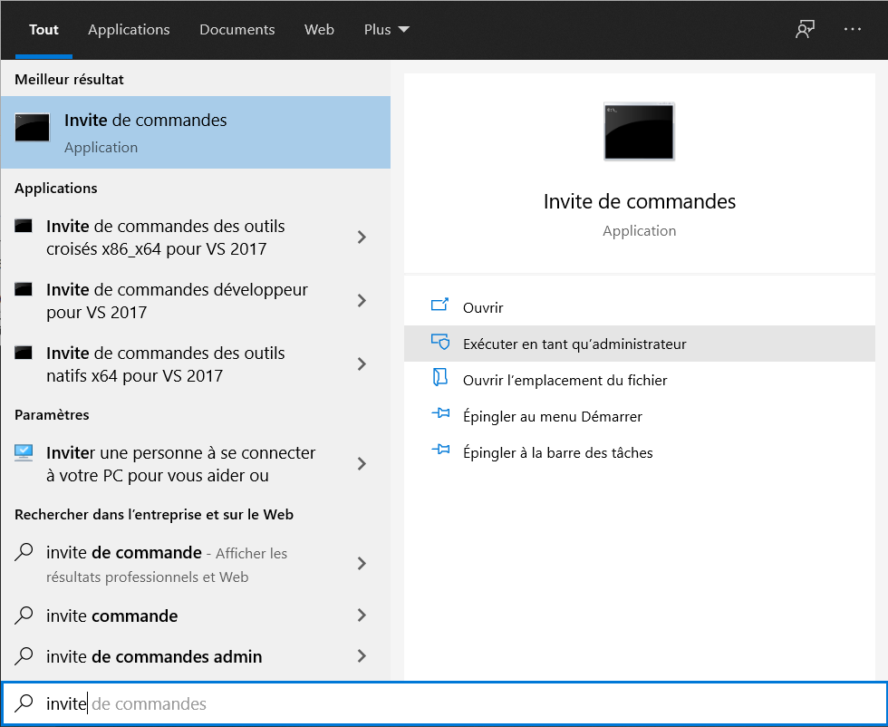
Exécutez la ligne de commande: netsh http add urlacl url=http://*:44363/ user="Tout le monde" comme indiqué dans l'image ci-dessous.
Si vous utilisez HTTPS, utilisez url=https:... plutôt. Vous pouvez même exécuter la commande pour chacun des deux: http et https.
Pour supprimer la réservation d'URL, exécutez netsh http delete urlacl url=http://*:44363/.
Si vous utilisez une autre langue système, disons l'anglais par exemple, alors le user="Tout le monde" doit plutôt être user=everyone.
Plus d'informations à https://docs.microsoft.com/en-us/iis/extensions/using-iis-express/handling-url-binding-failures-in-iis-express
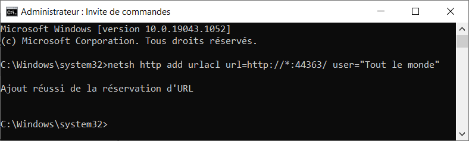
Ouvrez la fenêtre Pare-feu et protection du réseau comme indiqué ci-dessous, puis cliquez sur Paramètres avancés. Répondez Oui lorsqu'il vous est demandé d'autoriser le privilège administratif.
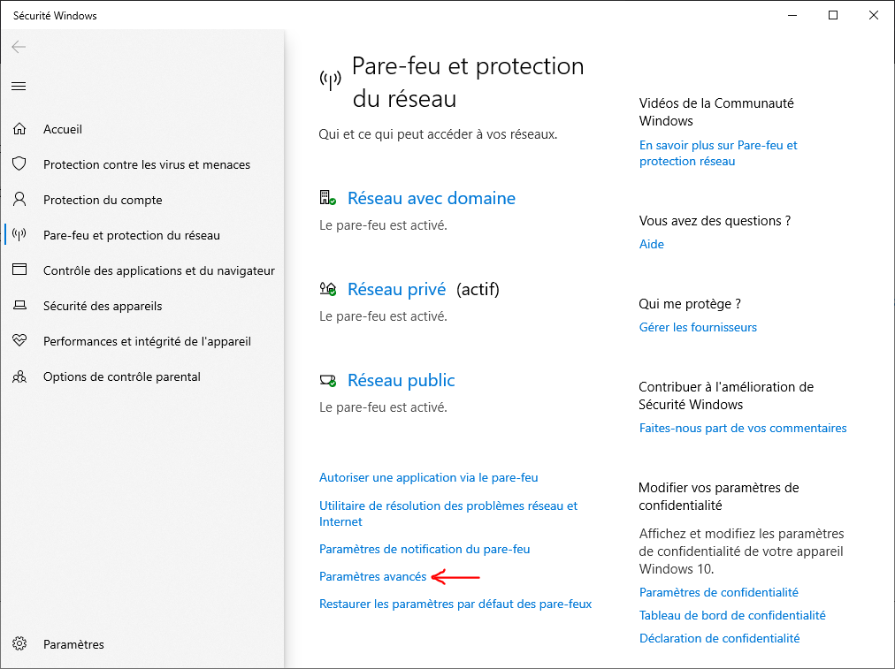
Dans la fenêtre qui s'ouvre, appelée Pare-feu Windows Defender avec fonctions avancées de sécurité, faites d'abord un clic gauche sur Règles de trafic entrant pour le sélectionner, puis faites un clic droit dessus et sélectionnez Nouvelle règle....
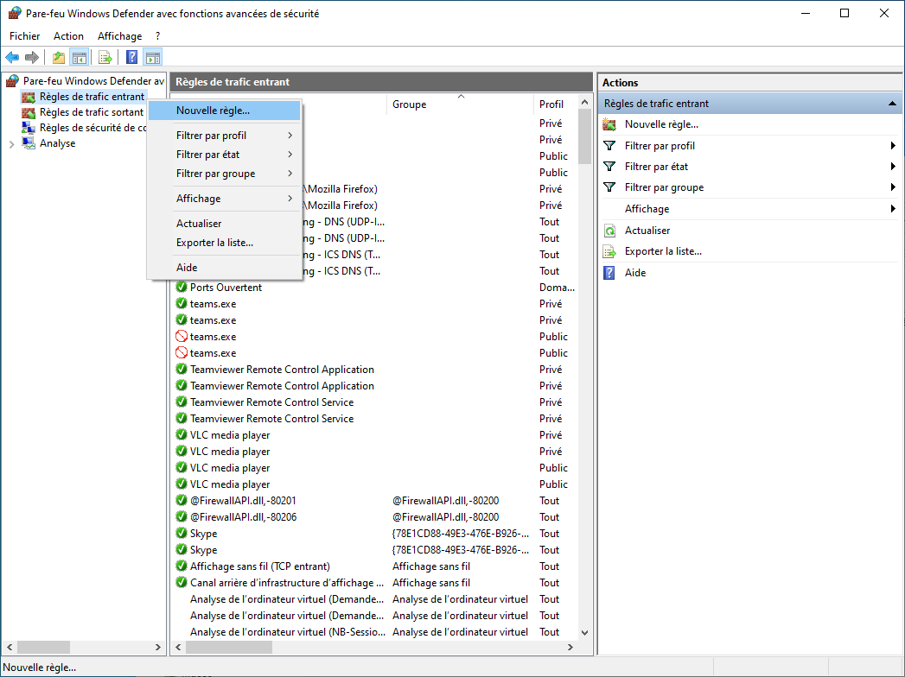
Dans la fenêtre qui s'ouvre, appelée Assistant Nouvelle règle de trafic entrant, sélectionnez Port comme indiqué ci-dessous, puis cliquez sur Suivant.
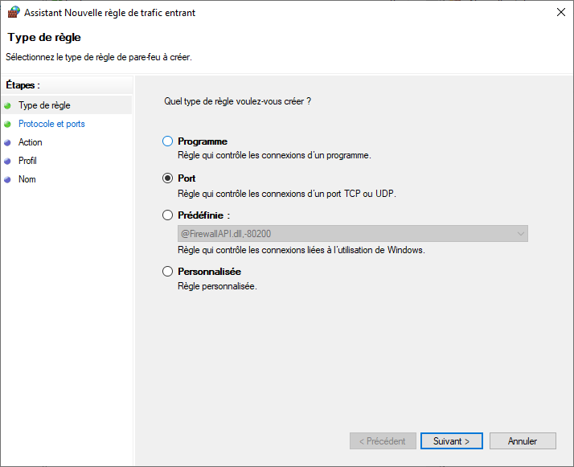
Sélectionnez maintenant Ports locaux spécifiques: et entrez le port 44363 comme indiqué ci-dessous, puis cliquez sur Suivant.
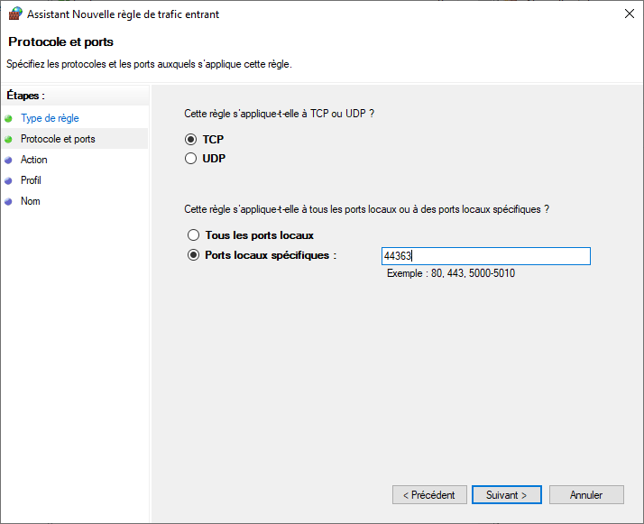
Sélectionnez maintenant Autoriser la connexion comme indiqué ci-dessous, puis cliquez sur Suivant.
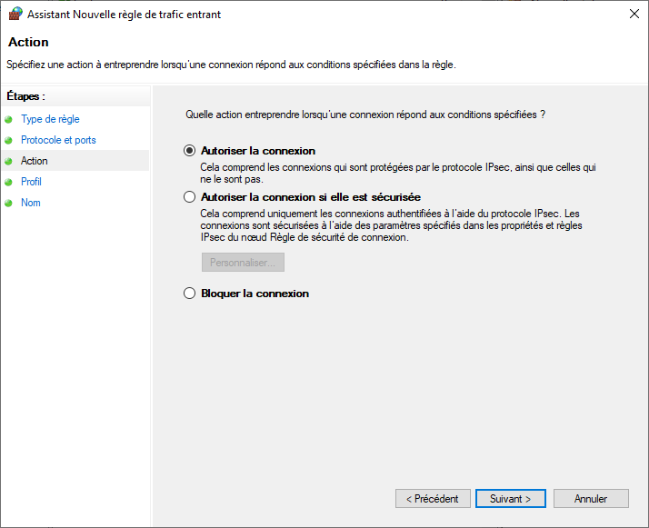
Cliquez sur Suivant.
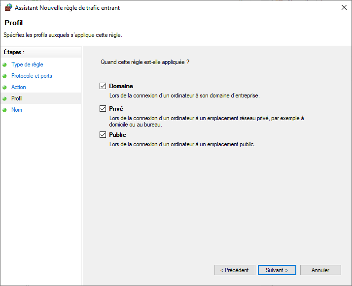
Spécifiez un nom pour la nouvelle règle, comme par exemple Connexion à ChatOnline comme indiqué ci-dessous, puis cliquez sur Terminer.
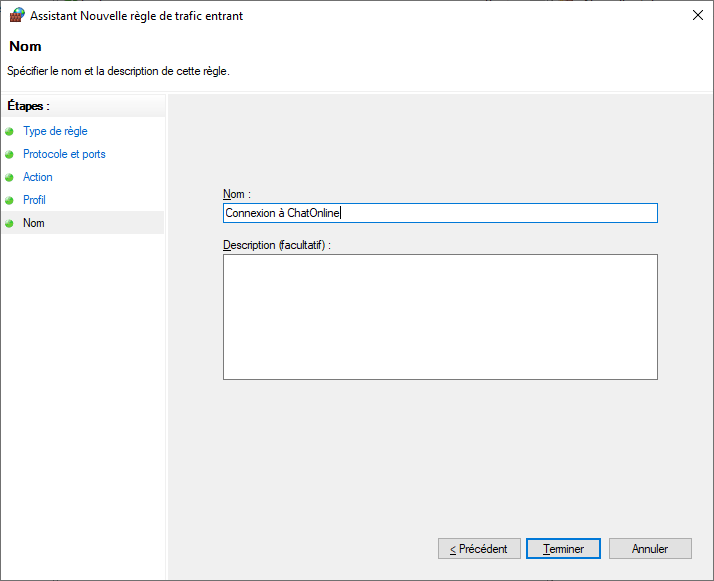
La nouvelle règle est ajoutée comme indiqué ci-dessous. Vous devrez peut-être actualiser les règles de trafic entrant pour le voir. Fermez maintenant la fenêtre.
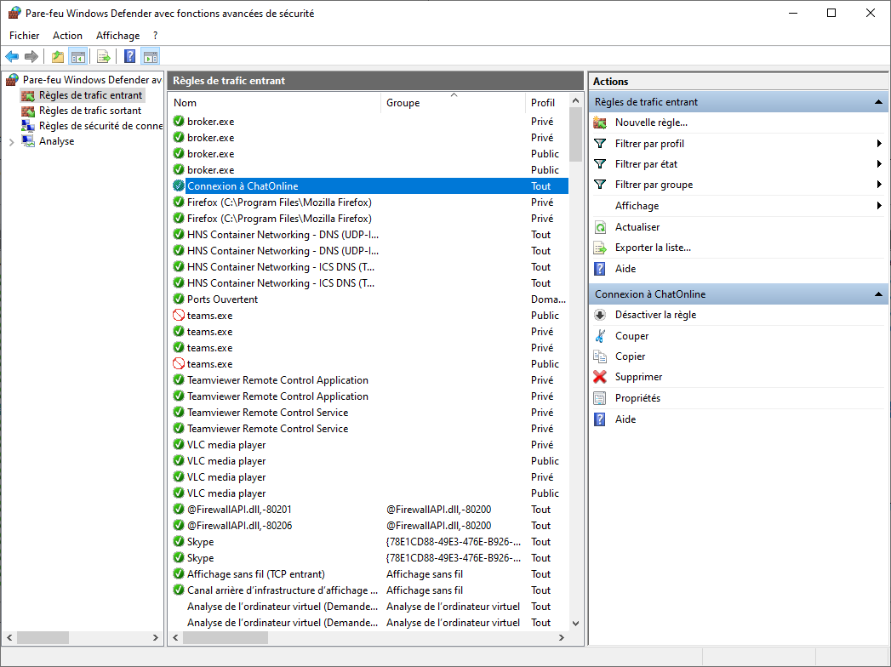
Relancez Visual Studio et relancez la solution ChatOnline.sln.
Ouvrez le fichier HTTPClient.cs et remplacez l'adresse IP par celle de votre ordinateur comme indiqué ci-dessous.
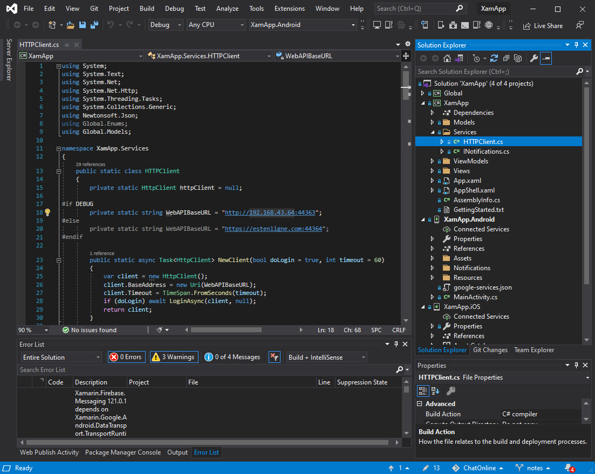